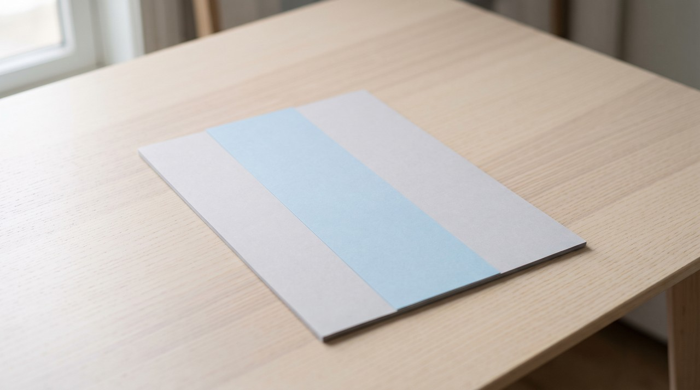
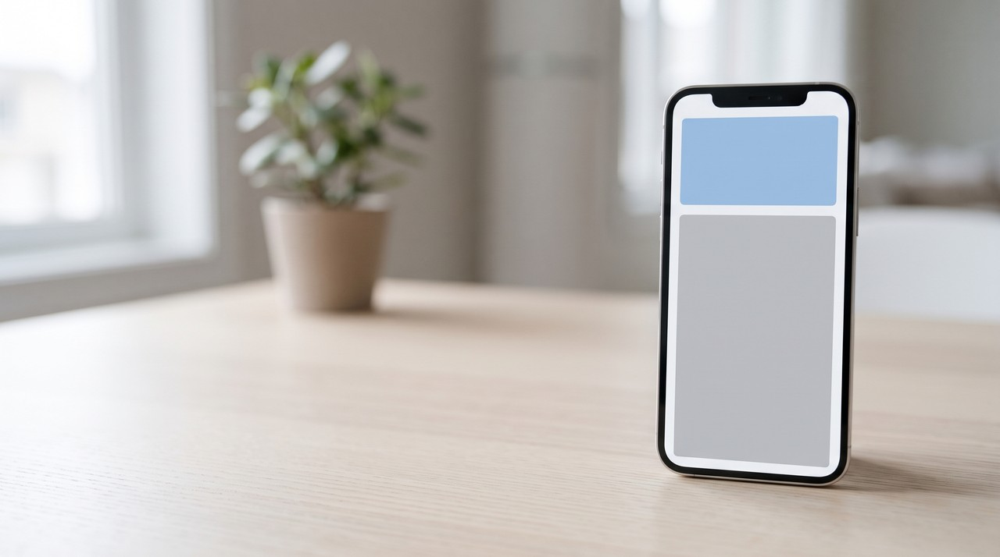

How to convert a horizontal video to vertical without cutting the speaker out
When you turn a horizontal video into a vertical one, you have two choices: crop a tall slice out of the wide picture, or shrink the whole picture so it fits the width of a phone screen. A straight crop on a 16:9 video only keeps about a third of the original image, so you should pick your framing based on what is actually on screen. Depending on the shot, you either follow the face, keep the whole picture, or put the webcam above the screen.
Say you have a wide video from a camera, a podcast, or a screen recording, and you want to make it tall for YouTube Shorts, TikTok, or Reels. You open your video editor, hit crop, and it automatically grabs the middle of the picture. If the person is sitting slightly to the left, half of their face gets cut right out of the frame.
This happens because of basic math. A standard wide video is 1920 pixels wide and 1080 pixels tall, so when you cut a tall slice out of it in the shape of a phone, that slice is only about 608 pixels wide. A straight crop throws away about two thirds of the picture. Because of that, the real decision is figuring out which third you want to keep, or whether cropping even makes sense for that clip.
I build a desktop app with a Video to shorts tab, so I had to work this out for every kind of video and not only the easy ones. The four framings below are what I settled on. You can use this same thinking in any video editor, and I will show you how to do it for free first.
What happens to a wide video when you make it vertical?

Any video editor only has two basic options here. It can crop the video, which means keeping a tall slice and cutting off both sides. Or it can fit the video, which means shrinking the whole wide picture until it matches the width of the phone screen and leaving empty space above and below.
Both options come with a tradeoff. Cropping keeps the image large, but you lose the sides and anything outside that slice disappears. Fitting keeps the whole image, but on a 1080 by 1920 screen your wide video ends up only about 608 pixels tall, which is under a third of the screen, and any text on screen shrinks to a little over half its original size. To avoid plain black bars, most editors fill that empty space above and below with a blurred copy of the same video.
The shape of the video matters because platforms use it to decide where to put your upload. According to YouTube's page on three minute Shorts, any video with a square or vertical shape that is up to three minutes long counts as a Short. If the video is still wide, YouTube will not treat it as a Short, no matter how brief it is.
Which framing fits which kind of video?

Before you touch the crop tool, take a look at what is actually on screen. The right framing depends on where the person is sitting and whether there is text that the viewer needs to read.
| What is on screen | Framing to pick | What you get |
|---|---|---|
| One person talking, a podcast or an interview | Follow the face | A tall slice that moves with the speaker |
| Slides, a whiteboard or a wide scene with nobody on screen | Whole picture on a blurred background | Nothing is cut, but everything is smaller |
| A screen recording or a game with a webcam in the corner | Webcam on top, screen below | A big face and the full screen, with no text cut off |
| A subject that stays in one spot away from the middle | Your own frame, placed once | A fixed slice exactly where you put it |
The third row in the table is where a simple middle crop fails the hardest. In a tutorial, your code or menu fills the whole screen while your face sits in a corner, so slicing out the middle leaves both cut off and hard to follow. The only framing that keeps both visible is stacking them, with the webcam on top and the screen below it.
The free way in any editor, and where it stops
If you only need to convert one clip, you do not need any special tool. You can do it by hand in the free editor on your phone or computer, and the steps are almost the same in all of them.
- Open a new project and set its frame shape to 9:16, which is 1080 by 1920 pixels.
- Drop your wide video onto the timeline, and it will sit in the middle with empty space above and below it.
- If you want to crop, scale the video up until it fills the full height, and then slide it sideways until the person is inside the frame.
- If you want to keep the whole picture, leave it at that smaller size and place a blurred copy of the same video behind it.
- Play the whole clip once before you export, and check whether anyone moves out of the frame.
This manual method runs into trouble as soon as people move. Because the crop stays locked in one spot for the whole clip, the moment the speaker leans over or the camera cuts to a second person on the other side, they fall out of the picture. You can fix this with keyframes, which are points on the timeline where you give the editor a new crop position, but you have to set every single one by hand. That works fine for one clip of a person sitting still, but it gets slow when you are editing ten clips from a two person podcast.
How does VideoDoc frame a tall clip?
In my own app, VideoDoc, I put these choices into one row of picture buttons called Layout inside the Video to shorts tab. The buttons are Auto, Follow face, Whole picture, Cam and screen, Cam and game, and Your frame. You select the part of your video you want, press a button, and a big phone preview on screen plays the short exactly the way it will look.
The Auto button makes the choice from the table for you. It follows the speaker's face to keep it inside the frame, moves smoothly as they shift, and cuts cleanly when the scene cuts instead of sliding across. When nobody is on screen, it shows the whole picture over a blurred background. And for a screen recording or gameplay with a webcam, it stacks the facecam on top and places the whole screen below it so no text on the screen gets cut off.
Your frame is there for the times when Auto picks wrong, or when you simply want to control it yourself. You drag the frame on the original video over to where the person is, and you can pull a corner to zoom in up to 4 times. The phone preview shows the result as you move it, and the export crops that exact area. Because the original video plays right next to the phone with the frame drawn on it, you can check the tracking before you export anything.
Everything happens locally on your own computer, so your video is never uploaded anywhere. The free version, Lite, takes videos up to 20 minutes long and adds a small "Made with VideoDoc" mark, and Pro removes both. If you are also deciding which parts of a long video to cut, I wrote that up in how to clip YouTube videos for TikTok.
Which shape should you export?
Stick with 9:16 at 1080 by 1920 when the clip is for Shorts, TikTok, or Reels, because that size fills the whole phone screen. VideoDoc also exports in square, 4:5, and the original shape, at the same frame rate as your video.
Square and 4:5 are worth keeping in mind because they hold on to more of a wide picture. Out of a 1920 pixel wide video, a square keeps 1080 pixels of the width and a 4:5 frame keeps 864, compared to 608 for the full tall shape. If two people sit side by side and a tall slice cannot hold both of them, a square clip often can, and YouTube still treats a square video as a Short.
There is one more thing to keep in mind before you start. Only convert videos that you are allowed to use, and if the video belongs to someone else, read can I clip someone else's YouTube video first.
Turning a video tall will not make small text readable. When you keep the whole picture, text shrinks to a little over half its original size, so a screen recording with tiny text needs zooming in rather than just a new shape. Auto is a choice the app makes, so play the preview and change the layout whenever it picks wrong. VideoDoc runs on Windows and Apple Silicon Macs, not on phones, no short can be longer than 3 minutes, and the first run downloads the speech engine once, which is about 486 MB. I cannot promise views for any clip.
See the framing on a phone preview before you export.
Lite is free for videos up to 20 minutes, and the details are on the Video to shorts page. Pro is a one time payment. GTA 6 week: the Pro button below adds code GTA6, which takes 50% off for the first 100 buyers.
Quick questions
How do I make a horizontal video vertical without cropping?
Shrink the whole picture so it fits the width of the tall frame, and fill the empty space above and below it, usually with a blurred copy of the same video. Nothing gets cut off, but the picture ends up smaller: on a 1080 by 1920 screen, a wide video is only about 608 pixels tall.
What size is a vertical video?
A standard vertical video is 1080 pixels wide and 1920 pixels tall, which is the 9:16 shape. That is the size that fills a phone screen on YouTube Shorts, TikTok, and Reels.
Does converting to vertical lower the quality?
Cropping can lower the quality. A tall slice cut from a 1920 by 1080 video is only about 608 pixels wide, so stretching it up to 1080 makes it look softer. If you record in 4K, which is 3840 by 2160, that same slice is 1215 pixels wide and stays sharp.
Tonight, open one wide video, check where the person sits in the picture, and pick the framing from the table before you touch the crop.
I am a telecom engineer and business analyst from Pakistan, and I build small honest desktop tools under Designesh. I made VideoDoc because I wanted my AI to read the lectures I study from. Everything here is tested on my own machine first.